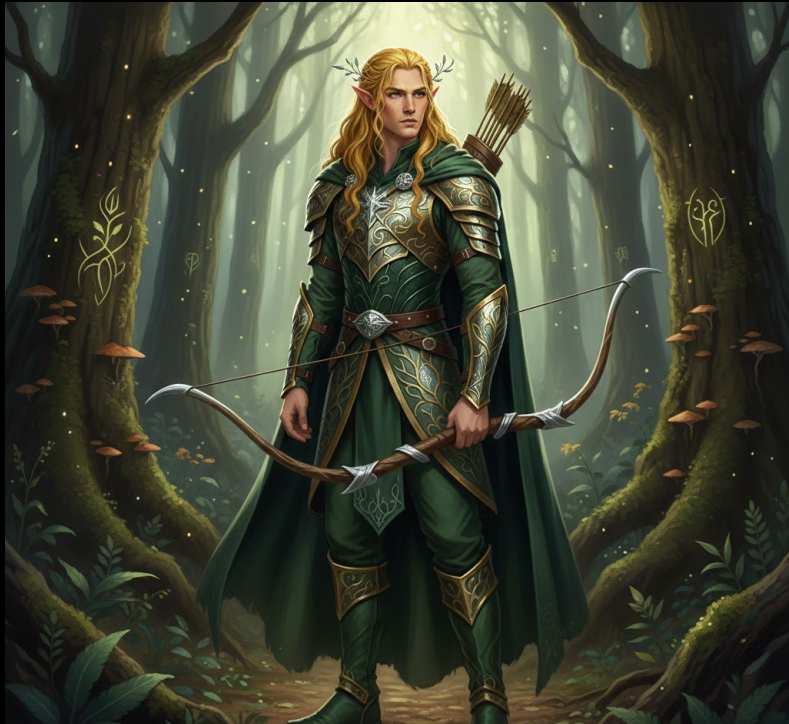
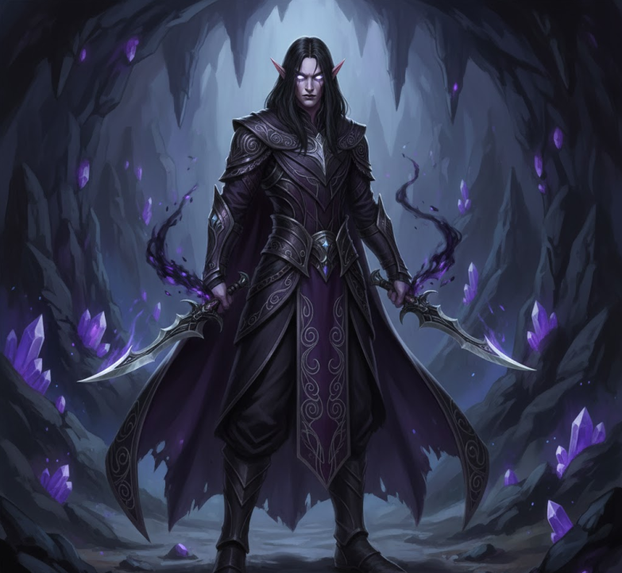

<section id="history" class="section-history">
  <div class="history-content">

    <!-- ================= HEADER ================= -->
    <header>
      <h2>Elves — Children of the Dawn, Echo of the Gods</h2>
      <p class="subtitle">The firstborn of the world, immortal in memory and soul</p>
    </header>

    <!-- ================= ELVES GENERAL ================= -->
    <article class="elves-origin lore">

      <h3>The Firstborn of the World</h3>

      <p>
        The Elves were the first children of Eru Ilúvatar to awaken into the world:
        immortal, conscious, and gifted with perfect memory that never fades.
        They do not age after reaching physical maturity, but they may die from mortal wounds
        or from the slow fading of the will.
      </p>

      <p>
        Their spirit, eternal, returns to the Halls Beyond where they rest until called again.
      </p>

      <p>
        Unlike humans, elves do not see time as a river but as a forest:
        each experience takes root, each memory blooms forever.
        That is why their gestures, words, and silences carry weight far beyond mortal understanding.
      </p>

      <p><strong>Their senses are superior:</strong></p>
      <ul>
        <li>They see great distances and read detail in low light.</li>
        <li>They hear a whisper through rainfall.</li>
        <li>They walk without leaving a trace.</li>
        <li>They rest through four hours of meditation that equals human sleep.</li>
      </ul>

      <p>
        Their beauty is not appearance alone — it is the visible mark of divine origin.
        And though their spirit is stable, their cultures are many:
        some seek harmony, others power, others perfect freedom.
        Their paths incline toward good and gentle chaos… except those devoured by darker forces.
      </p>

    </article>

    <!-- ================= PRIMORDIAL ELVES ================= -->
    <article class="primordials lore elf-layout">

      <div class="elf-text">
        <h3>☀️ Primordial Elves — The Fallen of Dawn</h3>

        <p>
          Legends say that before the elves we know today, there existed an elder bloodline:
          the Primordial Elves, born from the union of gods and ancient fire spirits.
          They were immortal, immune to sickness, and incapable of forgetting.
        </p>

        <p>
          They raised cities that challenged the skies, wove magic older than runes,
          tamed creatures now lost to legend… and destroyed human kingdoms
          as easily as others tear parchment.
        </p>

        <p>
          Their tragedy was themselves — too divine to coexist, too human to walk away.
        </p>

        <p>
          Their wars shattered mountains, split continents, and drained seas dry.
          In the end, the gods intervened not to save them, but to scatter them.
          Some died. Others were cursed. Others vanished into exile.
        </p>

        <p>
          From that fracture were born three paths:
          the Forest Elves, the Void Elves, and wandering descendants who still carry primordial blood.
        </p>

        <p>
          Today few Primordials remain… but each is a living myth.
          When one draws a blade, it does not cut flesh — it cuts destiny.
        </p>
      </div>

      <div class="elf-image primordials-image">
        
      </div>

    </article>

    <!-- ================= FOREST ELVES ================= -->
    <article class="forest-elves lore elf-layout">

      <div class="elf-text">
        <h3>🌿 Forest Elves — Children of the Green Pact</h3>

        <p>
          When the Primordials descended into the world, some refused to conquer it with fire and steel.
          Instead, they listened. They slept beneath whispering trees and learned from rivers like living teachers.
        </p>

        <p>
          The Mother of Nature revealed herself without speaking.
        </p>

        <p>
          She offered a pact:
          <em>"Give me your divine blood… and I shall grant you true eternity."</em>
        </p>

        <p>
          In accepting, their bodies changed.
        </p>

        <ul>
          <li>Skin hardened against poison and toxin.</li>
          <li>Eyes that pierce mist and rainfall.</li>
          <li>Ears that sense life on falling leaves.</li>
          <li>Blood scented like wet wood.</li>
        </ul>

        <p>
          They do not cast magic — they command it.
          Trees answer. Roots awaken. Beasts obey.
        </p>

        <p>
          They do not strike first…
          but when they do, even gods remember why forests were once feared.
        </p>
      </div>

      <div class="elf-image bosque-image">
        
      </div>

    </article>

    <!-- ================= VOID ELVES ================= -->
    <article class="void-elves lore elf-layout">

      <div class="elf-text">
        <h3>🌑 Void Elves — Exiles of the Light</h3>

        <p>
          Not all found open skies. Some were cast into abyssal depths where light never lived.
        </p>

        <p>
          They waited. No one came.
        </p>

        <p>
          And then the darkness began to speak.
        </p>

        <p>
          The void was born not as magic… but as hunger.
        </p>

        <ul>
          <li>White eyes that see through endless dark.</li>
          <li>Pale skin like dead stone.</li>
          <li>Hands swift as flowing shadow.</li>
          <li>Hearts empty of warmth.</li>
        </ul>

        <p>
          They silence light, walk through shadow, steal thoughts, drain life.
        </p>

        <p>
          They do not seek revenge — only survival.
          And wherever they walk… night grows colder.
        </p>
      </div>

      <div class="elf-image vacio-image">
        
      </div>

    </article>

    <!-- ================= CITIES ================= -->
    <article class="cities">

      <h3>Elven Kingdoms</h3>

      <div class="city">
        <h4>Alfheim — The Civilized Realm</h4>
        <p>
          Alfheim shines with crystal towers, academies, and ancient law.
          Knowledge rules here, preserved within silver libraries.
        </p>
      </div>

      <div class="city">
        <h4>Valinor — Realm of Nature</h4>
        <p>
          Valinor breathes through forests and rivers.
          Trees think. Wind speaks. Light heals.
        </p>
      </div>

      <div class="city">
        <h4>Menzoberranzan — Kingdom of Darkness</h4>
        <p>
          A city carved from shadowed stone beneath the earth.
          Survival defines worth.
        </p>
      </div>

    </article>

    <!-- ================= FINAL LORE ================= -->
    <article class="lore-connection">

      <h3>🌌 Relations Between Bloodlines</h3>

      <ul>
        <li><strong>Forest Elves</strong> honor Primordials as sacred ancestors.</li>
        <li><strong>Void Elves</strong> curse them as betrayers.</li>
        <li><strong>Primordials</strong> bear endless guilt.</li>
      </ul>

      <p>
        No elf belongs to one story alone…
        only to ancient war and forgotten fate.
      </p>

    </article>

  </div>
</section>
